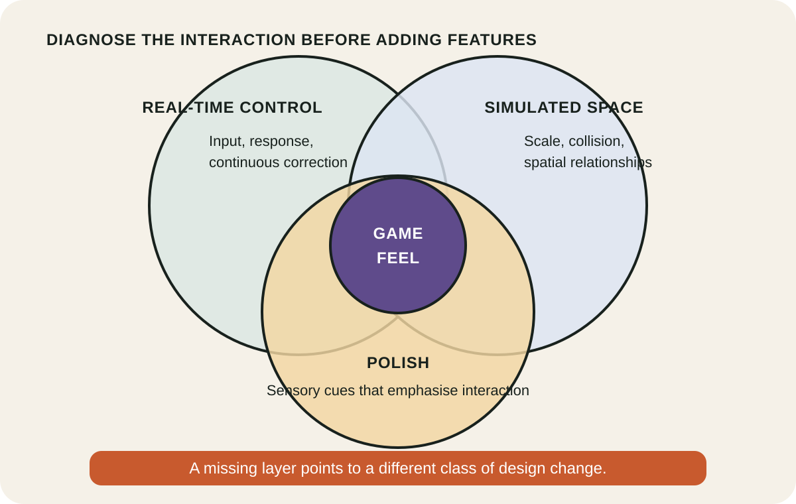
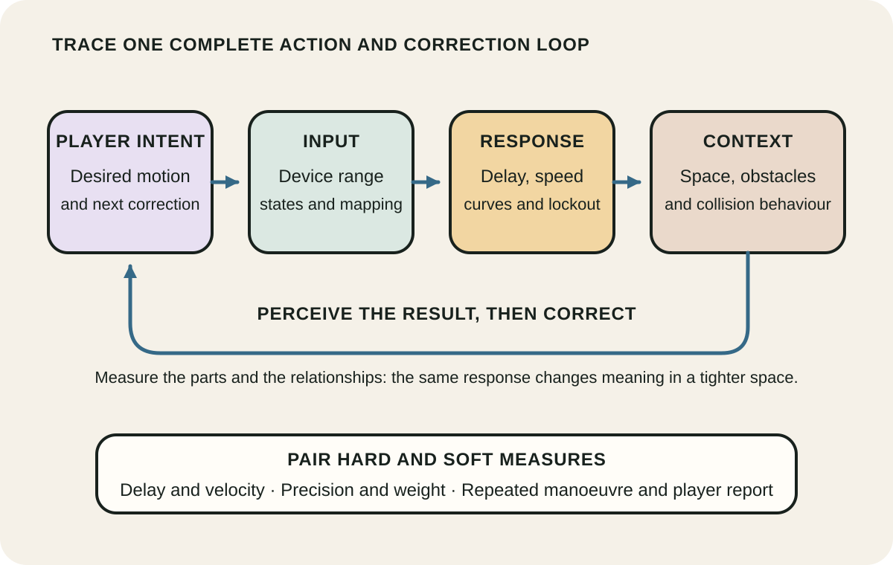
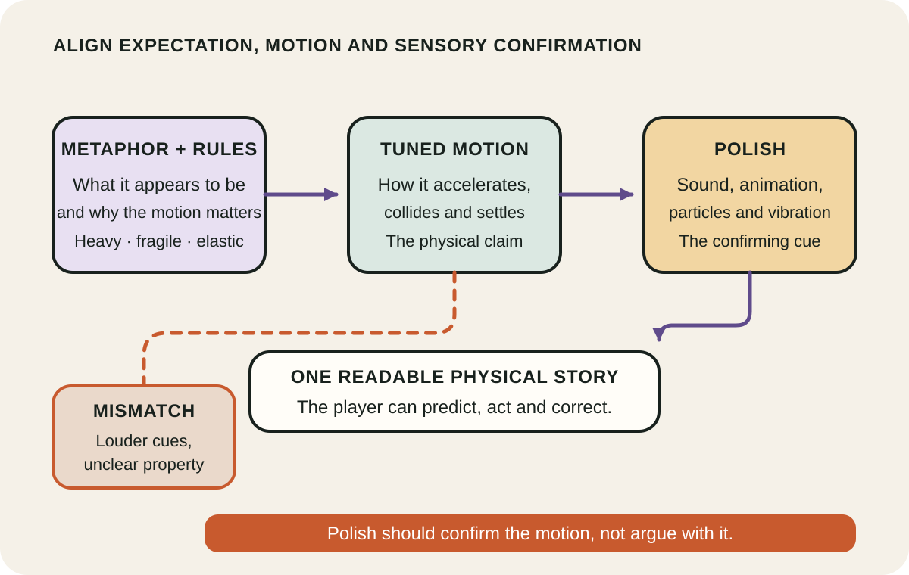

Daily lesson ·
Game Feel
Treat game feel as a controllable system: connect player input to immediate response, tune movement inside a meaningful space, and use metaphor, rules and polish to make interaction readable.
Idea 1
Find the intersection that creates game feel #
The idea
Swink draws a deliberate boundary around game feel: real-time control of virtual objects in a simulated space, with interactions emphasised by polish. Real-time control creates a continuous loop in which the player can act, perceive the result and correct the next action. Simulated space gives that motion scale, collision and relationships. Polish adds sensory cues that reinforce the interaction.
The definition is narrow on purpose. A turn-based strategy game can be excellent while falling outside this particular model, and a real-time game can contain some mechanics with strong feel and others with interrupted control. The model is a way to inspect an interaction, not a score for the whole game.

Why it matters
Vague complaints such as "floaty" or "unresponsive" can send a team toward random fixes. Separating control, space and polish narrows the search: the problem may be delayed response, weak collision context or feedback that fails to communicate impact.
Apply it today
Choose one repeated action such as jumping, steering or dragging and trace one complete input, response and correction loop.
Mark which of the three layers is weakest, then write one change that tests that diagnosis without altering the other two.
Caveat or failure mode
Swink's boundary excludes many valuable forms of play and should not be turned into a universal definition of quality. Menu interaction, turn-based planning and narrative choice can feel satisfying through other mechanisms. Use this model where continuous embodied control is central, and name the parts it does not explain.
Idea 2
Tune the control loop with useful measures #
The idea
Swink breaks the interaction into dimensions a designer can inspect. Input covers the physical device and the range of signals it can express. Response covers how the game maps and modulates those signals through values such as acceleration, speed, sensitivity and lockout. Context covers the space, obstacles and collision relationships that give movement practical meaning.
Measurement does not mean reducing feel to one number. Hard measures such as response delay and velocity sit beside soft measures such as perceived weight, precision and freedom. The aim is to compare versions and relationships deliberately instead of copying another game's finished values without its context.

Why it matters
A single parameter rarely owns the sensation. Fast acceleration can feel precise in an open course and uncontrollable in a narrow one. Mapping the chain makes trade-offs repeatable and helps a team preserve a good relationship when another variable changes.
Apply it today
Pick one troublesome manoeuvre and record its input, response delay, main motion values and nearest spatial constraint.
Change one value or one relationship, repeat the same manoeuvre three times and note both the measured difference and the felt difference.
Caveat or failure mode
Metrics can create false confidence. A shorter delay or smoother curve is not automatically better, accessibility needs may require different mappings, and laboratory consistency may hide how players behave under pressure. Use measures to make changes legible, then test the complete interaction with representative players.
Idea 3
Make feedback tell the same physical story #
The idea
Swink uses metaphor for the expectations created by representation and treatment. A stone, balloon and spaceship suggest different mass, acceleration and collision behaviour before the player moves them. Rules add goals, danger and value, changing which motions matter and how the player interprets control.
Polish supplies artificial sensory cues about physical interaction: animation, sound, particles, camera movement and similar emphasis. These cues can make contact, weight and force easier to perceive. They work best when metaphor, rules, motion and feedback tell a compatible story.

Why it matters
More effects can make an interaction louder without making it clearer. Aligning the physical story helps each cue carry information: a brief sound can mark contact, a small deformation can suggest softness, and a rule can make the same motion feel risky rather than decorative.
Apply it today
Choose one impact or movement and write the physical property the player should infer, such as heavy, elastic, fragile or precise.
List the motion, sound, visual and rule cues currently present. Remove one contradiction or add one missing confirmation, then compare both versions.
Caveat or failure mode
Polish can amplify clutter, discomfort and accessibility barriers as easily as it amplifies clarity. Camera shake, flashes, vibration and loud transients need adjustable or alternative channels. A coherent physical story is still a design choice, not a demand for realism; stylised motion can be more readable than literal simulation.
Knowledge check · 6 questions
Learning check
Answer all 6, then check your answers. Your first result stays in this browser, and each explanation appears after you check. A 3-question review can appear on the homepage from tomorrow.
6 questions not yet answered.
Today's experiment · 10 minutes
Build a one-variable feel ladder
- Minutes 0 to 2: choose one repeated action and name the intended quality, such as precise, heavy or elastic.
- Minutes 2 to 4: identify one adjustable relationship, such as acceleration to top speed or jump time to platform spacing.
- Minutes 4 to 6: create low, current and high versions of that one value while holding the other layers steady.
- Minutes 6 to 8: perform the same manoeuvre three times in each version and record one hard measure plus one felt description.
- Minutes 8 to 10: choose the next range to test and name one context in which the preference might reverse.
Observable result: A three-point comparison that links one measured change to an observed difference in feel.
Retrieval practice
Spaced recall
- From Game Design Workshop: which parts of a playtest report should keep observation separate from interpretation and proposed change?
- From Range: what would make a comparison between two movement systems structural rather than merely visual?
- From Building Evolutionary Architectures: what small fitness function could protect one important response-time boundary?
Verification
Source notes
These links support the attributed claims and edition details; applications and extensions are labelled in the lesson.
- Routledge: Game Feel edition, description and publication details
- WorldCat: Game Feel bibliographic record and chapter contents
- Google Books: Game Feel publication record and preview
- Washington State University course extract: mechanics and metrics of game feel
- Game Developer: Steve Swink on control feel and physical input
- Designing Game Feel: survey of tuning, juicing and streamlining
One-sentence takeaway